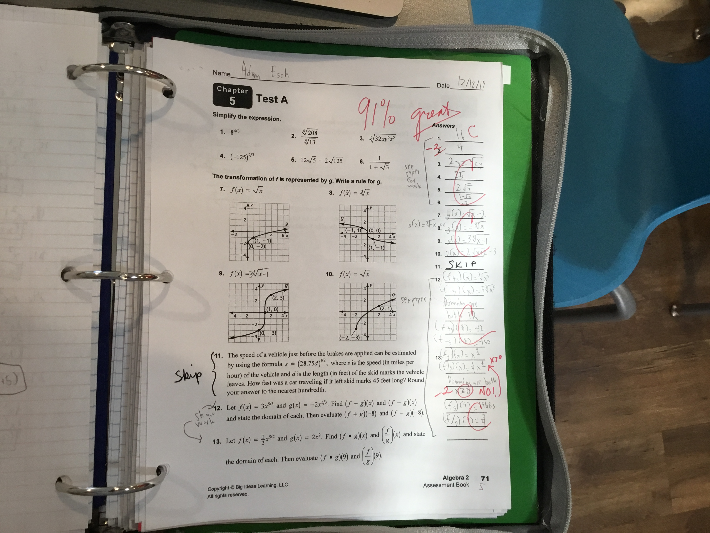
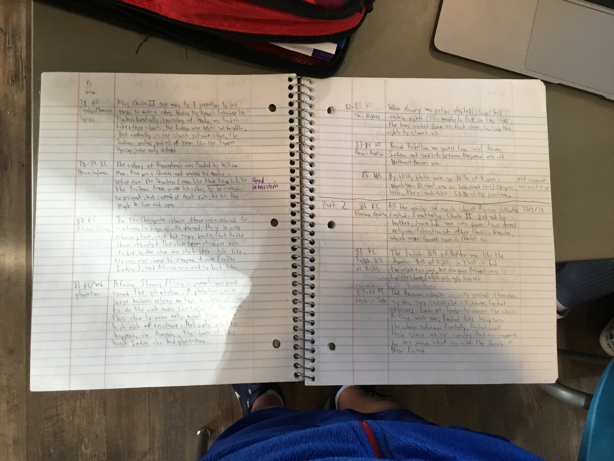
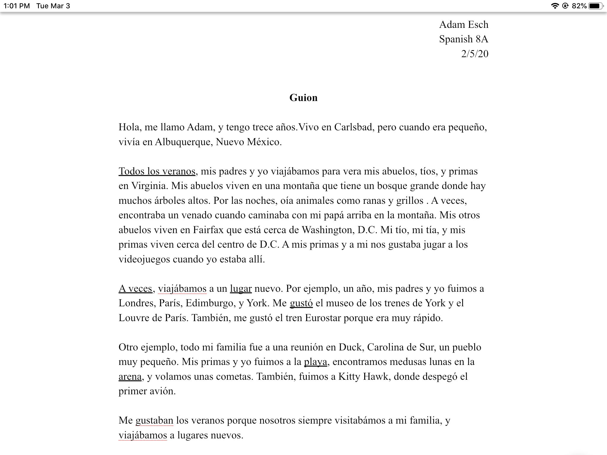

Home Page
Academic Artifacts and Reflections
Math

This artifact shows my strength since we had to provide other work that was not asked of in the directions on this test.
Literature

This artifact reflects my stretch, since this was my first essay in literature.
Social Studies

This artifact shows my stretch turing into a strength, as there is more analysis in this GML annotation than the previous ones.
Spanish

This artifact reflects my strength, since some of the instructions were not in the assignment sheet.